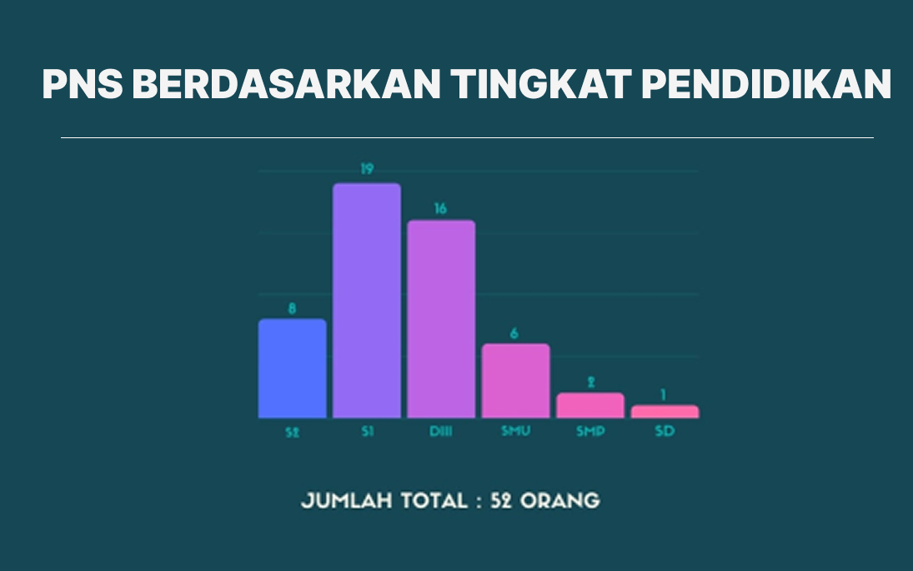
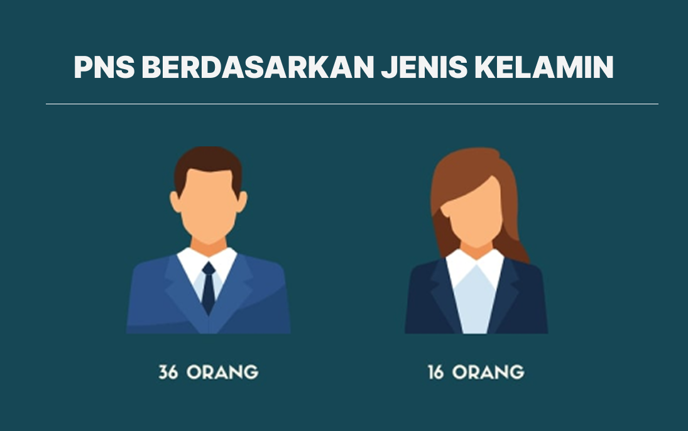
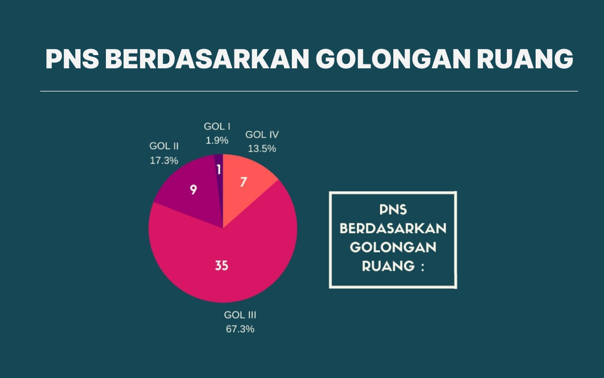

Data komposisi PNS Dinas Komunikasi dan Informatika Kabupaten Banyumas per November 2025

Total PNS: 52 orang
• S2: 8 orang
• S1: 19 orang
• DIII: 16 orang
• SMU: 6 orang
• SMP: 2 orang
• SD: 1 orang

Total PNS: 52 orang
• Laki-laki: 36 orang (69,23%)
• Perempuan: 16 orang (30,77%)

Total PNS: 52 orang
• Golongan III: 35 orang (67,3%)
• Golongan II: 9 orang (17,3%)
• Golongan IV: 7 orang (13,5%)
• Golongan I: 1 orang (1,9%)